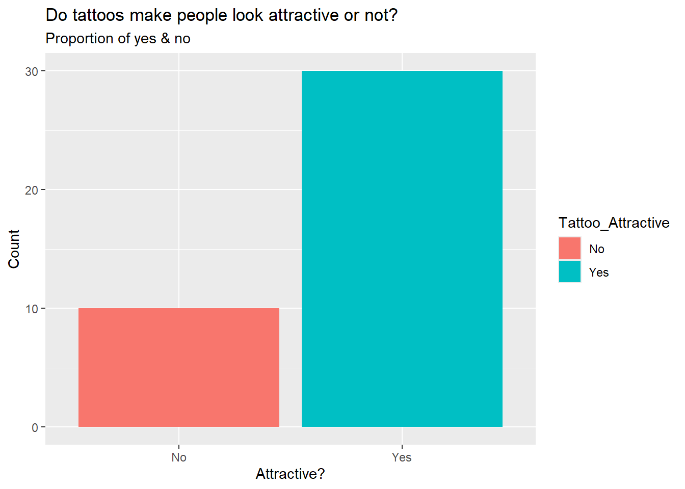
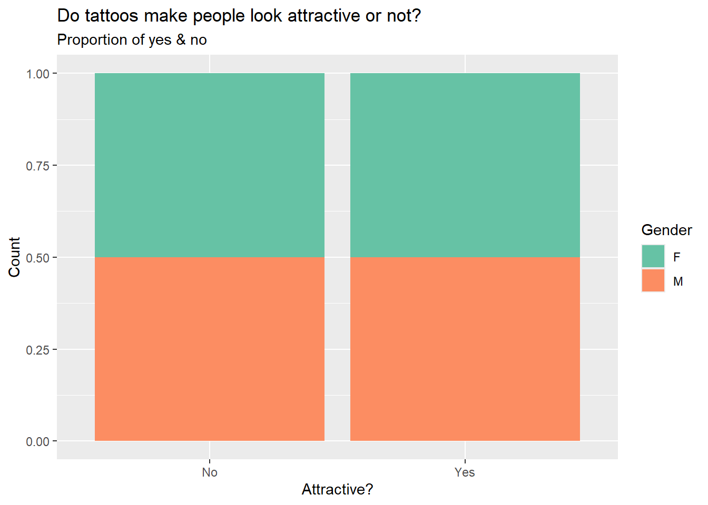
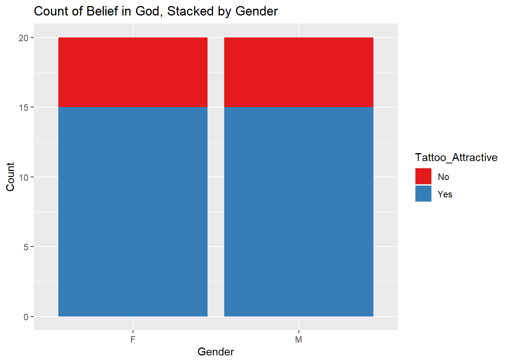

New to ggformula? Try the tutorials:
learnr::run_tutorial("introduction", package = "ggformula")
learnr::run_tutorial("refining", package = "ggformula")
library(janitor)
Attaching package: 'janitor'
The following objects are masked from 'package:stats':
chisq.test, fisher.test
library(mosaic)
Registered S3 method overwritten by 'mosaic':
method from
fortify.SpatialPolygonsDataFrame ggplot2
The 'mosaic' package masks several functions from core packages in order to add
additional features. The original behavior of these functions should not be affected by this.
Attaching package: 'mosaic'
The following objects are masked from 'package:dplyr':
count, do, tally
The following object is masked from 'package:Matrix':
mean
The following object is masked from 'package:scales':
rescale
The following object is masked from 'package:ggplot2':
stat
The following objects are masked from 'package:stats':
binom.test, cor, cor.test, cov, fivenum, IQR, median, prop.test,
quantile, sd, t.test, var
The following objects are masked from 'package:base':
max, mean, min, prod, range, sample, sum
library(naniar)library(skimr)
Attaching package: 'skimr'
The following object is masked from 'package:naniar':
n_complete
The following object is masked from 'package:mosaic':
n_missing
Attaching package: 'infer'
The following objects are masked from 'package:mosaic':
prop_test, t_test
library(resampledata)
Attaching package: 'resampledata'
The following object is masked from 'package:datasets':
Titanic
library(openintro)
Loading required package: airports
Loading required package: cherryblossom
Loading required package: usdata
Attaching package: 'openintro'
The following object is masked from 'package:GGally':
tips
The following object is masked from 'package:mosaic':
dotPlot
The following objects are masked from 'package:lattice':
ethanol, lsegments
library(vcd)
Loading required package: grid
Attaching package: 'vcd'
The following object is masked from 'package:mosaic':
mplot
library(visStatistics)
Reading the file
tat <-read.csv("tattoo_attraction.csv")glimpse(tat)
tat_modified <- tat %>%mutate(across(where(is.character), as.factor))%>% dplyr::relocate(where(is.factor), .after = Name)glimpse(tat_modified)
Rows: 40
Columns: 3
$ Name <fct> Aadya, Abhinav, Aditya, Akash, Amit, Amogh, Anurag, …
$ Gender <fct> F, M, M, M, M, M, M, M, M, F, M, F, M, F, M, F, F, M…
$ Tattoo_Attractive <fct> Yes, Yes, No, Yes, No, Yes, Yes, Yes, Yes, No, Yes, …
Examining the Data
tat_modified %>%group_by(Gender) %>%count()
# A tibble: 2 × 2
# Groups: Gender [2]
Gender n
<fct> <int>
1 F 20
2 M 20
# A tibble: 4 × 3
# Groups: Gender [2]
Gender Tattoo_Attractive n
<fct> <fct> <int>
1 F No 5
2 F Yes 15
3 M No 5
4 M Yes 15
tat_modified %>%summarize(prop =prop(Tattoo_Attractive, success ="Yes"), n =n())
prop n
1 0.75 40
Visualising the Data
tat_modified %>%gf_bar(~Tattoo_Attractive, fill =~ Tattoo_Attractive) %>%gf_labs(x ="Attractive?",y ="Count",title ="Do tattoos make people look attractive or not?",subtitle ="Proportion of yes & no" )

tat_modified %>%gf_bar(~Tattoo_Attractive | Gender, fill =~ Tattoo_Attractive) %>%gf_labs(x ="Attractive?",y ="Count",title ="Do tattoos make people look attractive or not?",subtitle ="Proportion of yes & no" ) %>%gf_refine(scale_fill_brewer(palette ="Set1"))
tat_modified %>%gf_bar(~Tattoo_Attractive, fill =~ Gender, position ="fill") %>%gf_labs(x ="Attractive?",y ="Count",title ="Do tattoos make people look attractive or not?",subtitle ="Proportion of yes & no" ) %>%gf_refine(scale_fill_brewer(palette ="Set2"))

tat_modified %>%gf_bar(~Gender, fill =~ Tattoo_Attractive, position ="stack") %>%gf_labs(x ="Gender",y ="Count",title ="Count of Belief in God, Stacked by Gender" ) %>%gf_refine(scale_fill_brewer(palette ="Set1"))

Prop Test: Does a majority of the population find tattoos attractive?
H0: p=0.5 (Half of the students think tattoos are attractive & Half of the students think tattoos are not attractive)
H1: p≠0.5
mosaic::binom.test(~Tattoo_Attractive, data = tat_modified, success ="Yes") %>% broom::tidy()
Since the observed value is less than the critical value and the p-value is greater than 0.05, we fail to reject the null hypothesis.
There is no significant difference between male and female respondents in how they perceive tattoos. Both genders gave almost identical responses which suggests that gender does not play a major role in determining whether tattoos are attractive or not.
Conclusion
To sum up, most of the people found tattoos attractive (75%). The proportion test confirmed that it is statistically significant. A chi-square test was conducted to see if opinions differ from men to women. The test showed no significant difference as both males and females gave the same responses. Overall, we see that tattoos are found attractive and gender doesn’t play a role in how it’s perceived.